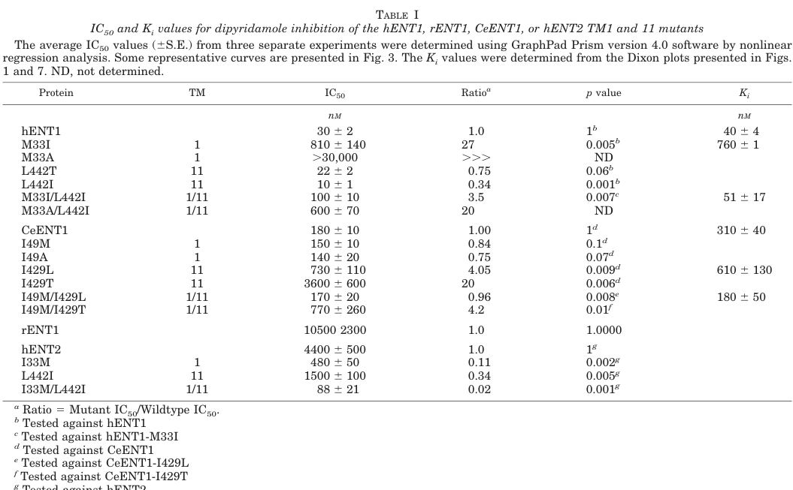

ENT-1 is an equilibrative nucleoside transporter (CeENT1) that belongs to the SLC29A/ENT transporter family. It is a multi-pass membrane protein (~445 amino acids with 10-12 predicted transmembrane helices) that transports nucleosides with broad permeant specificity similar to human ENT1. ENT-1 exhibits functional redundancy with ENT-2 (94% amino acid identity), and both transporters are required for proper C. elegans development and reproduction. The protein localizes to plasma membrane and is expressed in intestine, pharynx, and critically in germline cells where it mediates cross-tissue nucleoside coordination. ENT-1 is inhibited by dipyridamole but insensitive to classic mammalian nucleoside transport inhibitors like nitrobenzylthioinosine (NBMPR) and dilazep. Heterologous expression in yeast directly demonstrated CeENT1-mediated transport of uridine and adenosine, with dipyridamole inhibition in the nanomolar range (IC50 ~180 nM) that is governed in part by Ile429 in transmembrane helix 11. Together with ENT-2, it forms a metabolic coupling system where intestinal ENT-2 exports nucleosides to the pseudocoelom and germline ENT-1 imports them, with guanosine transport being particularly critical for fertility.
Definition: The activity of nucleoside transporters that exhibit functional redundancy, where individual transporter knockdown has no phenotype but combined loss results in developmental defects
Justification: ENT-1 and ENT-2 demonstrate a specific type of functional redundancy in nucleoside transport that is important for development but not captured by existing GO terms
Supporting Evidence:
| GO Term | Evidence | Action | Reason |
|---|---|---|---|
|
GO:0005886
plasma membrane
|
IBA
GO_REF:0000033 |
ACCEPT |
Summary: ENT-1 is correctly predicted to localize to plasma membrane based on phylogenetic analysis. This is consistent with experimental evidence and the function as a transmembrane nucleoside transporter.
Reason: Accurate subcellular localization supported by phylogenetic inference and consistent with experimental evidence. ENT-1 functions as a plasma membrane transporter. Falcon deep research independently confirms germline plasma membrane localization via endogenous CRISPR tagging.
Supporting Evidence:
file:worm/ent-1/ent-1-deep-research.md
See deep research file for comprehensive analysis
file:worm/ent-1/ent-1-deep-research-falcon.md
ENT-1 is positioned **at the plasma membrane in the germline**
|
|
GO:0005337
nucleoside transmembrane transporter activity
|
IBA
GO_REF:0000033 |
ACCEPT |
Summary: Core molecular function of ENT-1 accurately captured by phylogenetic inference. ENT-1 is experimentally demonstrated to transport nucleosides with broad permeant specificity.
Reason: This represents the primary molecular function of ENT-1 as demonstrated experimentally. The IBA annotation correctly captures the transporter activity. Direct heterologous expression in yeast established CeENT1 transport of uridine and adenosine (Visser et al. 2005, PMID:15649894).
Supporting Evidence:
PMID:15371014
These transporters resemble their human counterparts hENT1 and hENT2 in exhibiting similar broad permeant specificities for nucleosides
PMID:15649894
impaired uridine and adenosine transport
file:worm/ent-1/ent-1-deep-research-falcon.md
CeENT1 mediates transport of **uridine** and **adenosine**, consistent with equilibrative nucleoside transport.
|
|
GO:0005337
nucleoside transmembrane transporter activity
|
IEA
GO_REF:0000002 |
ACCEPT |
Summary: Electronic annotation based on InterPro domain analysis correctly identifies nucleoside transporter activity. Redundant with IBA annotation but accurate.
Reason: Electronic annotation correctly identifies the molecular function, though less specific than the IBA annotation. Both are accurate and supported by experimental evidence.
|
|
GO:0015858
nucleoside transport
|
IEA
GO_REF:0000117 |
ACCEPT |
Summary: Electronic annotation correctly identifies the biological process ENT-1 participates in. This captures the transport function demonstrated experimentally.
Reason: Accurate biological process annotation. ENT-1 is experimentally demonstrated to transport nucleosides, which is the core biological process it mediates.
Supporting Evidence:
PMID:15371014
equilibrative transporters, which we designate CeENT1 and CeENT2 respectively
|
|
GO:0016020
membrane
|
IEA
GO_REF:0000120 |
MODIFY |
Summary: Very general membrane localization annotation that is accurate but non-specific. The more specific plasma membrane annotation is preferable.
Reason: While accurate, this annotation is too general. ENT-1 specifically localizes to plasma membrane, so the more specific term should be used instead.
Proposed replacements:
plasma membrane
|
|
GO:0022857
transmembrane transporter activity
|
IEA
GO_REF:0000117 |
MODIFY |
Summary: General transmembrane transporter activity annotation that is accurate but less informative than the specific nucleoside transporter terms.
Reason: While correct, this term is too general. The more specific nucleoside transmembrane transporter activity term better describes ENT-1 function.
Proposed replacements:
nucleoside transmembrane transporter activity
|
|
GO:1901642
nucleoside transmembrane transport
|
IEA
GO_REF:0000002 |
ACCEPT |
Summary: Specific biological process annotation for nucleoside transmembrane transport which is more precise than the general nucleoside transport term.
Reason: This is a more specific and accurate biological process term that better captures the transmembrane transport nature of ENT-1 function compared to the broader nucleoside transport term.
Supporting Evidence:
PMID:15371014
encode equilibrative transporters, which we designate CeENT1 and CeENT2
|
|
GO:0005886
plasma membrane
|
IDA
PMID:15371014 Functional redundancy of two nucleoside transporters of the ... |
ACCEPT |
Summary: Direct experimental evidence for plasma membrane localization using GFP reporter constructs. This is the strongest evidence for subcellular localization.
Reason: Direct experimental evidence (IDA) for plasma membrane localization is the gold standard. This annotation is strongly supported by experimental data using GFP fusion proteins.
Supporting Evidence:
PMID:15371014
Use of green fluorescent protein reporter constructs indicated that the transporters are present in a limited number of locations
|
|
GO:0007276
gamete generation
|
IMP
PMID:40446206 Cross-tissue coordination between SLC nucleoside transporter... |
NEW |
Summary: ENT-1 supports gamete generation by importing nucleosides into germline cells for DNA replication during gametogenesis.
Reason: Well-supported by experimental evidence showing ENT-1 in germline is required for proper gametogenesis and fertility.
Supporting Evidence:
PMID:40446206
ENT-1 facilitates their transportation from the pseudocoelom to the germline
|
Q: What is the evolutionary basis for nucleoside transporter redundancy in C. elegans development?
Suggested experts: Evolutionary developmental biologists, Comparative genomics specialists, C. elegans developmental biologists
Q: How do tissue-specific requirements for nucleoside transport contribute to organism-wide nucleotide homeostasis?
Suggested experts: Metabolic physiologists, Developmental biochemists, Systems biology researchers
Q: Can C. elegans ENT transporters serve as models for understanding human nucleoside transporter diseases?
Suggested experts: Medical geneticists, Pharmacologists, Translational researchers
Experiment: Systematically test transport kinetics for different nucleosides and nucleobases to define precise substrate preferences and compare with mammalian ENT1/ENT2
Hypothesis: ENT-1 will show broad nucleoside specificity but distinct nucleobase preferences compared to mammalian orthologs
Type: Substrate specificity analysis
Experiment: Use tissue-specific promoters to express ENT-1 in different tissues in double knockout animals to determine which tissues require nucleoside transport for normal development
Hypothesis: Intestinal and pharyngeal expression of ENT-1 will be sufficient to rescue developmental defects in ent-1/ent-2 double knockouts
Type: Tissue-specific rescue experiments
Experiment: Test sensitivity to various nucleoside transport inhibitors to characterize unique pharmacological properties of C. elegans ENT transporters
Hypothesis: ENT-1 will show distinct inhibitor sensitivity profiles compared to mammalian ENTs, potentially identifying species-specific therapeutic targets
Type: Pharmacological profiling
The research report should be a detailed narrative explaining the function, biological processes, and localization of the gene product. Citations should be given for all claims.
You should prioritize authoritative reviews and primary scientific literature when conducting research. You can supplement
this with annotations you find in gene/protein databases, but these can be outdated or inaccurate.
We are specifically interested in the primary function of the gene - for enzymes, what reaction is catalyzed, and what is the substrate specificity? For transporters, what is the substrate? For structural proteins or adapters, what is the broader structural role? For signaling molecules, what is the role in the pathway.
We are interested in where in or outside the cell the gene product carries out its function.
We are also interested in the signaling or biochemical pathways in which the gene functions. We are less interested in broad pleiotropic effects, except where these elucidate the precise role.
Include evidence where possible. We are interested in both experimental evidence as well as inference from structure, evolution, or bioinformatic analysis. Precise studies should be prioritized over high-throughput, where available.
The target protein specified by UniProt accession G5EDJ3 is a Caenorhabditis elegans equilibrative nucleoside transporter (ENT) family member, referred to in primary literature as ceENT-1 / CeENT1 and studied alongside CeENT2 (a close paralog; 94% amino-acid identity). The same C. elegans ENT-1 protein is explicitly referenced with UniProt G5EDJ3 in a recent genetics/metabolism study, confirming that the present report concerns the intended gene/protein identity (not a similarly named gene from another organism). (guan2025crosstissuecoordinationbetween pages 12-14, visser2005identificationandmutational pages 2-3)
ENTs are polytopic membrane transporters that mediate sodium-independent (i.e., equilibrative/facilitated diffusion) transport of nucleosides (and in some cases nucleobases) across biological membranes, supporting nucleotide salvage and the cellular uptake of nucleoside analog drugs. (guan2025crosstissuecoordinationbetween pages 2-5, visser2005identificationandmutational pages 1-2)
ENT-family proteins share a conserved architecture with 11 transmembrane helices (TMs) and characteristic loops (including a large cytosolic loop between TM6–TM7; and often a large glycosylated loop between TM1–TM2). This topology is described explicitly in ENT mechanistic work on CeENT1/hENT1. (visser2005identificationandmutational pages 1-2)
Nucleotides required for DNA/RNA synthesis can be produced by de novo pathways or by salvage pathways that convert extracellular/internal nucleosides/nucleobases into nucleotides. The C. elegans germline has exceptionally high nucleotide demand during production of thousands of germ cells; thus, transporter-mediated nucleoside supply can become physiologically limiting. (guan2025crosstissuecoordinationbetween pages 10-12, guan2025crosstissuecoordinationbetween pages 1-2)
A definitive, reductionist functional characterization of CeENT1 was performed by heterologous expression in yeast (Saccharomyces cerevisiae) and transport assays using radiolabeled nucleosides. In these assays, CeENT1 mediates transport of uridine and adenosine, consistent with equilibrative nucleoside transport. (visser2005identificationandmutational pages 2-3)
CeENT1-mediated nucleoside transport is inhibited by dipyridamole at nanomolar concentrations. Quantitatively, Visser et al. report CeENT1 dipyridamole inhibition parameters: IC50 = 180 ± 10 nM and Ki = 310 ± 40 nM (competitive inhibition is described for uridine and adenosine influx). (visser2005identificationandmutational pages 5-6, visser2005identificationandmutational pages 2-3)
CeENT proteins (CeENT1/2) are additionally described as insensitive to NBMPR and dilazep (pharmacologic distinction from mammalian ENT1). (visser2005identificationandmutational pages 2-3)
Visser et al. used random mutagenesis and targeted mutational analysis to identify residues that control dipyridamole interactions. A key CeENT1 residue is Ile429 (TM11); mutations markedly reduce sensitivity to dipyridamole (e.g., I429L IC50 730 ± 110 nM; Ki 610 ± 130 nM; I429T IC50 3600 ± 600 nM). These findings support a model where TM1 and TM11 contribute to inhibitor interaction and transport properties, providing mechanistic anchors for functional annotation beyond sequence similarity alone. (visser2005identificationandmutational pages 5-6, visser2005identificationandmutational pages 2-3)
A 2025 C. elegans study focused on organismal physiology provides evidence that purine nucleosides—especially guanosine—are physiologically critical substrates in an ENT-1/ENT-2 axis supporting reproduction. In this work, combined ent perturbation reduced guanosine levels and altered purine metabolism gene expression, and pseudocoelomic microinjection of 1 mM guanosine (but not 1 mM adenosine) partially rescued brood size in ent-1KO;ent-2KD animals. This supports the interpretation that ENT-1 participates in purine nucleoside supply to germline nucleotide pools, with guanosine emerging as rate-limiting under double-transporter disruption. (guan2025crosstissuecoordinationbetween pages 10-12, guan2025crosstissuecoordinationbetween pages 1-2)
Endogenous CRISPR-tagged strains show ENT-1 expression in the germline and intestine (and ENT-2 expression in intestine and gonadal sheath cells). (guan2025crosstissuecoordinationbetween pages 5-7)
Using fluorescent fusions and imaging, ENT-1 is positioned at the plasma membrane in the germline, while ENT-2 localizes predominantly to the basolateral plasma membrane of the intestine. These observations underpin a soma-to-germline transport model: ENT-2 exports nucleosides from intestine to pseudocoelom, and ENT-1 mediates uptake from pseudocoelom to germline. (guan2025crosstissuecoordinationbetween pages 10-12)
Auxin-inducible degradation (AID) experiments indicate ENT-1’s reproductive role is primarily germline-autonomous in the context of ENT-2 reduction: germline-specific depletion of ENT-1 with ent-2 knockdown produced a ~2-fold brood-size reduction, whereas intestine-specific depletion of ENT-1 did not reduce brood size under the same conditions. (guan2025crosstissuecoordinationbetween pages 5-7)
Combined ENT perturbation (ent-1 and ent-2) is associated with transcriptional upregulation of both de novo and salvage purine biosynthesis pathways (but not pyrimidine pathways) and metabolite changes consistent with altered purine nucleoside balance (guanosine decreased; adenosine and inosine increased). These results connect ENT-1 function to purine nucleotide homeostasis in germline physiology. (guan2025crosstissuecoordinationbetween pages 10-12)
RNAi knockdown of ent-1 reduces brood size by ~9.8% (and ent-2 knockdown by ~19.8%) and alters daily progeny dynamics, extending reproductive duration. Single CRISPR knockout of ent-1 can appear near-wild-type due to compensatory induction of ent-2, but double loss of ent-1 and ent-2 causes severe phenotypes: in complete double knockouts, severe developmental delay/arrest and sterility were reported; in partial double loss-of-function models (ent-1KO;ent-2KD), brood size is drastically reduced (“close to being sterile”). (guan2025crosstissuecoordinationbetween pages 2-5, guan2025crosstissuecoordinationbetween pages 5-7)
Because ent-1-specific mechanistic papers in 2023–2024 were not retrieved in this tool run, the most relevant 2023–2024 advances are mechanistic/structural ENT-family studies in other systems that refine interpretation of ENT transporter function and inhibitor interactions.
Wang et al. (Nature Communications; published March 2023) solved cryo-EM structures of PfENT1 (an ENT-family transporter) in apo and substrate/inhibitor-bound states, supporting an 11-TM pseudosymmetric fold and a rocker-switch alternating-access mechanism. They identify inosine as a primary substrate and define binding-site interactions in the central cavity. While PfENT1 is from Plasmodium and shares low sequence identity with metazoan ENTs, the structural framework is highly informative for ENT-family mechanism (central cavity binding, alternating-access), which plausibly generalizes to C. elegans ENT-1 given shared 11-TM architecture. URL: https://doi.org/10.1038/s41467-023-37411-1 (wang2023structuralbasisof pages 1-2, wang2023structuralbasisof pages 2-4)
Wright et al. (Nature Communications; published Dec 2024) used structural data to redesign an ENT1 inhibitor and demonstrate a therapeutic concept: ENT1 inhibition elevates extracellular adenosine and potentiates A1 receptor (A1R)-mediated analgesia. They describe an orthosteric substrate site in the central cavity and additional “opportunistic” pockets that can be exploited for selectivity. While this work concerns human ENT1 pharmacology, it provides modern expert-level interpretation of ENT inhibition mechanisms and illustrates real-world applications of ENT biology (drug discovery). URL: https://doi.org/10.1038/s41467-024-54914-7 (wright2024designofan pages 1-2)
The 2025 C. elegans study operationalizes a real-world experimental paradigm for transporter functional annotation: combining endogenous tagging, tissue-specific depletion, targeted metabolomics, and metabolite microinjection to demonstrate that a specific nucleoside (guanosine) is limiting for reproduction when the transport axis is disrupted. This provides a concrete blueprint for practical functional testing of transporter substrates in vivo. (guan2025crosstissuecoordinationbetween pages 10-12, guan2025crosstissuecoordinationbetween pages 5-7)
ENT family members mediate uptake/efflux of nucleosides and nucleoside analogs and can regulate extracellular adenosine signaling; modern inhibitor-design efforts illustrate how ENT inhibition can be therapeutically leveraged (e.g., analgesia). While C. elegans lacks mammalian adenosine receptor biology in the same form, these studies support the general principle that ENT activity can have systems-level effects by controlling extracellular nucleoside availability. (wright2024designofan pages 1-2)
The strongest supported functional annotation for C. elegans ent-1 (CeENT1; UniProt G5EDJ3) is:
| Evidence type | Key finding for ent-1/CeENT1 | Experimental system | Quantitative data | Citation |
|---|---|---|---|---|
| Transport assay / inhibitor pharmacology | CeENT1 is an equilibrative nucleoside transporter assayed with uridine and adenosine; dipyridamole competitively inhibits transport, whereas CeENT proteins were described as insensitive to NBMPR and dilazep | CeENT1 heterologous expression in Saccharomyces cerevisiae (yeast KTK cells) | CeENT1 dipyridamole IC50 = 180 ± 10 nM; Ki = 310 ± 40 nM | (visser2005identificationandmutational pages 5-6, visser2005identificationandmutational pages 2-3, visser2005identificationandmutational pages 1-2) |
| Transport assay / structure-function | TM1 and TM11 residues contribute to inhibitor interaction and transport properties; key CeENT1 residue Ile429 in TM11 modulates dipyridamole sensitivity | Yeast expression of wild-type and mutant CeENT1 constructs | I429L: IC50 = 730 ± 110 nM; Ki = 610 ± 130 nM; I429T: IC50 = 3600 ± 600 nM | (visser2005identificationandmutational pages 5-6, visser2005identificationandmutational pages 3-5, visser2005identificationandmutational pages 8-9) |
| Family/topology verification | CeENT1/CeENT2 are highly similar C. elegans ENT-family transporters; ENT proteins are polytopic membrane proteins with 11 predicted TM helices and a large cytoplasmic loop between TM6-TM7 | Comparative sequence/topology analysis in JBC study | CeENT1 and CeENT2 share 94% amino-acid identity | (visser2005identificationandmutational pages 2-3, visser2005identificationandmutational pages 1-2, visser2005identificationandmutational media be6f53e2) |
| Genetics / reproduction | ent-1 loss reduces reproductive output; ent-1 and ent-2 act redundantly/synergistically in fertility and development | C. elegans RNAi and CRISPR knockout | ent-1 RNAi reduced brood size by ~9.8%; ent-2 RNAi by ~19.8%; double loss caused complete sterility with developmental delay/vulval protrusion | (guan2025crosstissuecoordinationbetween pages 2-5) |
| Tissue-specific genetics | ENT-1 functions primarily in the germline rather than intestine to support reproduction | Auxin-inducible degron (AID) tissue-specific depletion of endogenous ENT-1 with ent-2 knockdown background | Germline-specific ENT-1 depletion caused ~2-fold brood-size reduction; intestine-specific depletion had no brood-size reduction; tagged ENT-1 strain showed mild brood reduction (~200 vs ~300 WT) | (guan2025crosstissuecoordinationbetween pages 5-7) |
| Localization | ENT-1 localizes to the germline plasma membrane, consistent with uptake from pseudocoelom into germ cells | Endogenous CRISPR-tagged ENT-1::mNeonGreen in C. elegans | Qualitative plasma-membrane localization in germline; compensatory upregulation in intestine/germline reported in ent-2 mutants | (guan2025crosstissuecoordinationbetween pages 10-12, guan2025crosstissuecoordinationbetween pages 5-7, guan2025crosstissuecoordinationbetween pages 12-14) |
| Metabolomics / pathway | ENT-1 participates in soma-to-germline nucleoside transfer linked to purine metabolism; loss of ENT function lowers germline guanosine and alters purine-biosynthesis gene expression | Targeted metabolomics and single-cell/single-nucleus transcriptomics in ent perturbation models | ENT double perturbation lowered guanosine:adenosine ratio; guanosine decreased while adenosine/inosine increased | (guan2025crosstissuecoordinationbetween pages 10-12, guan2025crosstissuecoordinationbetween pages 2-5, guan2025crosstissuecoordinationbetween pages 1-2) |
| Physiological rescue / substrate relevance | Guanosine is the most strongly supported physiological substrate for the ENT-1/ENT-2 reproductive axis; pseudocoelomic guanosine rescues fertility defect, adenosine does not | Nucleoside microinjection into C. elegans pseudocoelom | 1 mM guanosine microinjection partially restored brood size in ent-1KO;ent-2KD worms; oral supplementation ineffective; adenosine injection had no effect | (guan2025crosstissuecoordinationbetween pages 10-12, guan2025crosstissuecoordinationbetween pages 1-2) |
Table: This table compiles the main experimental evidence supporting functional annotation of C. elegans ent-1/CeENT1, spanning transport pharmacology, localization, genetics, and metabolomics. It is useful for linking molecular transporter properties to organismal reproductive phenotypes and purine/guanosine metabolism.
Quantitative inhibitor evidence and mechanistic/topology models were retrieved from Visser et al. (JBC 2005), including Table I reporting dipyridamole IC50/Ki values for CeENT1 and mutants and figures supporting the TM1/TM11 interaction model. (visser2005identificationandmutational media be6f53e2, visser2005identificationandmutational media 478b3edb, visser2005identificationandmutational media 1f4b81b6)
References
(guan2025crosstissuecoordinationbetween pages 12-14): Youchen Guan, Yong Yu, Shihong M. Gao, Lang Ding, Qian Zhao, and Meng C. Wang. Cross-tissue coordination between slc nucleoside transporters regulates reproduction in caenorhabditis elegans. PLOS Genetics, 21:e1011425, May 2025. URL: https://doi.org/10.1371/journal.pgen.1011425, doi:10.1371/journal.pgen.1011425. This article has 1 citations and is from a domain leading peer-reviewed journal.
(visser2005identificationandmutational pages 2-3): Frank Visser, Stephen A. Baldwin, R. Elwyn Isaac, James D. Young, and Carol E. Cass. Identification and mutational analysis of amino acid residues involved in dipyridamole interactions with human and caenorhabditis elegans equilibrative nucleoside transporters*. Journal of Biological Chemistry, 280:11025-11034, Mar 2005. URL: https://doi.org/10.1074/jbc.m410348200, doi:10.1074/jbc.m410348200. This article has 49 citations and is from a domain leading peer-reviewed journal.
(guan2025crosstissuecoordinationbetween pages 2-5): Youchen Guan, Yong Yu, Shihong M. Gao, Lang Ding, Qian Zhao, and Meng C. Wang. Cross-tissue coordination between slc nucleoside transporters regulates reproduction in caenorhabditis elegans. PLOS Genetics, 21:e1011425, May 2025. URL: https://doi.org/10.1371/journal.pgen.1011425, doi:10.1371/journal.pgen.1011425. This article has 1 citations and is from a domain leading peer-reviewed journal.
(visser2005identificationandmutational pages 1-2): Frank Visser, Stephen A. Baldwin, R. Elwyn Isaac, James D. Young, and Carol E. Cass. Identification and mutational analysis of amino acid residues involved in dipyridamole interactions with human and caenorhabditis elegans equilibrative nucleoside transporters*. Journal of Biological Chemistry, 280:11025-11034, Mar 2005. URL: https://doi.org/10.1074/jbc.m410348200, doi:10.1074/jbc.m410348200. This article has 49 citations and is from a domain leading peer-reviewed journal.
(guan2025crosstissuecoordinationbetween pages 10-12): Youchen Guan, Yong Yu, Shihong M. Gao, Lang Ding, Qian Zhao, and Meng C. Wang. Cross-tissue coordination between slc nucleoside transporters regulates reproduction in caenorhabditis elegans. PLOS Genetics, 21:e1011425, May 2025. URL: https://doi.org/10.1371/journal.pgen.1011425, doi:10.1371/journal.pgen.1011425. This article has 1 citations and is from a domain leading peer-reviewed journal.
(guan2025crosstissuecoordinationbetween pages 1-2): Youchen Guan, Yong Yu, Shihong M. Gao, Lang Ding, Qian Zhao, and Meng C. Wang. Cross-tissue coordination between slc nucleoside transporters regulates reproduction in caenorhabditis elegans. PLOS Genetics, 21:e1011425, May 2025. URL: https://doi.org/10.1371/journal.pgen.1011425, doi:10.1371/journal.pgen.1011425. This article has 1 citations and is from a domain leading peer-reviewed journal.
(visser2005identificationandmutational pages 5-6): Frank Visser, Stephen A. Baldwin, R. Elwyn Isaac, James D. Young, and Carol E. Cass. Identification and mutational analysis of amino acid residues involved in dipyridamole interactions with human and caenorhabditis elegans equilibrative nucleoside transporters*. Journal of Biological Chemistry, 280:11025-11034, Mar 2005. URL: https://doi.org/10.1074/jbc.m410348200, doi:10.1074/jbc.m410348200. This article has 49 citations and is from a domain leading peer-reviewed journal.
(guan2025crosstissuecoordinationbetween pages 5-7): Youchen Guan, Yong Yu, Shihong M. Gao, Lang Ding, Qian Zhao, and Meng C. Wang. Cross-tissue coordination between slc nucleoside transporters regulates reproduction in caenorhabditis elegans. PLOS Genetics, 21:e1011425, May 2025. URL: https://doi.org/10.1371/journal.pgen.1011425, doi:10.1371/journal.pgen.1011425. This article has 1 citations and is from a domain leading peer-reviewed journal.
(wang2023structuralbasisof pages 1-2): Chen Wang, Leiye Yu, Jiying Zhang, Yanxia Zhou, Bo Sun, Qingjie Xiao, Minhua Zhang, Huayi Liu, Jinhong Li, Jialu Li, Yunzi Luo, Jie Xu, Zhong Lian, Jingwen Lin, Xiang Wang, Peng Zhang, Li Guo, Ruobing Ren, and Dong Deng. Structural basis of the substrate recognition and inhibition mechanism of plasmodium falciparum nucleoside transporter pfent1. Nature Communications, Mar 2023. URL: https://doi.org/10.1038/s41467-023-37411-1, doi:10.1038/s41467-023-37411-1. This article has 26 citations and is from a highest quality peer-reviewed journal.
(wang2023structuralbasisof pages 2-4): Chen Wang, Leiye Yu, Jiying Zhang, Yanxia Zhou, Bo Sun, Qingjie Xiao, Minhua Zhang, Huayi Liu, Jinhong Li, Jialu Li, Yunzi Luo, Jie Xu, Zhong Lian, Jingwen Lin, Xiang Wang, Peng Zhang, Li Guo, Ruobing Ren, and Dong Deng. Structural basis of the substrate recognition and inhibition mechanism of plasmodium falciparum nucleoside transporter pfent1. Nature Communications, Mar 2023. URL: https://doi.org/10.1038/s41467-023-37411-1, doi:10.1038/s41467-023-37411-1. This article has 26 citations and is from a highest quality peer-reviewed journal.
(wright2024designofan pages 1-2): Nicholas J. Wright, Yutaka Matsuoka, Hyeri Park, Wei He, Caroline G. Webster, Kenta Furutani, Justin G. Fedor, Aidan McGinnis, Yiquan Zhao, Ouyang Chen, Sangsu Bang, Ping Fan, Ivan Spasojevic, Jiyong Hong, Ru-Rong Ji, and Seok-Yong Lee. Design of an equilibrative nucleoside transporter subtype 1 inhibitor for pain relief. Nature Communications, Dec 2024. URL: https://doi.org/10.1038/s41467-024-54914-7, doi:10.1038/s41467-024-54914-7. This article has 4 citations and is from a highest quality peer-reviewed journal.
(visser2005identificationandmutational pages 3-5): Frank Visser, Stephen A. Baldwin, R. Elwyn Isaac, James D. Young, and Carol E. Cass. Identification and mutational analysis of amino acid residues involved in dipyridamole interactions with human and caenorhabditis elegans equilibrative nucleoside transporters*. Journal of Biological Chemistry, 280:11025-11034, Mar 2005. URL: https://doi.org/10.1074/jbc.m410348200, doi:10.1074/jbc.m410348200. This article has 49 citations and is from a domain leading peer-reviewed journal.
(visser2005identificationandmutational pages 8-9): Frank Visser, Stephen A. Baldwin, R. Elwyn Isaac, James D. Young, and Carol E. Cass. Identification and mutational analysis of amino acid residues involved in dipyridamole interactions with human and caenorhabditis elegans equilibrative nucleoside transporters*. Journal of Biological Chemistry, 280:11025-11034, Mar 2005. URL: https://doi.org/10.1074/jbc.m410348200, doi:10.1074/jbc.m410348200. This article has 49 citations and is from a domain leading peer-reviewed journal.
(visser2005identificationandmutational media be6f53e2): Frank Visser, Stephen A. Baldwin, R. Elwyn Isaac, James D. Young, and Carol E. Cass. Identification and mutational analysis of amino acid residues involved in dipyridamole interactions with human and caenorhabditis elegans equilibrative nucleoside transporters*. Journal of Biological Chemistry, 280:11025-11034, Mar 2005. URL: https://doi.org/10.1074/jbc.m410348200, doi:10.1074/jbc.m410348200. This article has 49 citations and is from a domain leading peer-reviewed journal.
(guan2025crosstissuecoordinationbetween pages 18-19): Youchen Guan, Yong Yu, Shihong M. Gao, Lang Ding, Qian Zhao, and Meng C. Wang. Cross-tissue coordination between slc nucleoside transporters regulates reproduction in caenorhabditis elegans. PLOS Genetics, 21:e1011425, May 2025. URL: https://doi.org/10.1371/journal.pgen.1011425, doi:10.1371/journal.pgen.1011425. This article has 1 citations and is from a domain leading peer-reviewed journal.
(visser2005identificationandmutational media 478b3edb): Frank Visser, Stephen A. Baldwin, R. Elwyn Isaac, James D. Young, and Carol E. Cass. Identification and mutational analysis of amino acid residues involved in dipyridamole interactions with human and caenorhabditis elegans equilibrative nucleoside transporters*. Journal of Biological Chemistry, 280:11025-11034, Mar 2005. URL: https://doi.org/10.1074/jbc.m410348200, doi:10.1074/jbc.m410348200. This article has 49 citations and is from a domain leading peer-reviewed journal.
(visser2005identificationandmutational media 1f4b81b6): Frank Visser, Stephen A. Baldwin, R. Elwyn Isaac, James D. Young, and Carol E. Cass. Identification and mutational analysis of amino acid residues involved in dipyridamole interactions with human and caenorhabditis elegans equilibrative nucleoside transporters*. Journal of Biological Chemistry, 280:11025-11034, Mar 2005. URL: https://doi.org/10.1074/jbc.m410348200, doi:10.1074/jbc.m410348200. This article has 49 citations and is from a domain leading peer-reviewed journal.

Generated using OpenAI Deep Research API
UniProt ID: G5EDJ3
Directory alias: ent-1
The ent-1 gene in Caenorhabditis elegans encodes an equilibrative nucleoside transporter (CeENT1), a membrane protein involved in moving nucleosides across cell membranes. This gene (sequence tag ZK809.4) is one of seven ENT-family members in C. elegans and is highly similar (94% amino acid identity) to the ent-2 gene, suggesting a recent gene duplication (pmc.ncbi.nlm.nih.gov). Worm ENT proteins are homologous to the human equilibrative nucleoside transporters (hENTs) of the SLC29A family (pubmed.ncbi.nlm.nih.gov). Below is a comprehensive overview of ent-1 including its molecular function, localization, biological roles, relevant phenotypes, structural features, expression regulation, evolutionary conservation, and key experimental evidence supporting its annotation.
The ent-1 gene product is a facilitative nucleoside transporter that enables the uptake and release of nucleosides across cell membranes. Functional characterization studies demonstrated that CeENT1 (ENT-1) can transport a broad range of nucleosides (both purine and pyrimidine) similar to human ENT1/ENT2 (pubmed.ncbi.nlm.nih.gov). Unlike concentrative transporters, equilibrative nucleoside transporters do not couple to ion gradients; instead, ENT-1 facilitates diffusion down concentration gradients (equilibrative transport). Worm ENT-1 and its paralog ENT-2 share overlapping substrate specificity for nucleosides, yet they differ in transporting free nucleobases (pubmed.ncbi.nlm.nih.gov). In particular, CeENT1 and CeENT2 resemble hENT1/hENT2 in broad nucleoside permeability, but show differing selectivity for nucleobases (pubmed.ncbi.nlm.nih.gov), implying one may more efficiently transport nucleobase metabolites than the other. Biochemical assays in heterologous systems confirmed ENT-1’s activity: for example, expressed CeENT1 is insensitive to classic mammalian ENT inhibitors (e.g. NBMPR, dilazep) but is inhibited by dipyridamole (pubmed.ncbi.nlm.nih.gov), matching the inhibitor profile of equilibrative nucleoside transporters. These findings establish ENT-1 as a nucleoside transmembrane transporter (GO:0005337) responsible for nucleoside transport across cell membranes (pubmed.ncbi.nlm.nih.gov) (pubmed.ncbi.nlm.nih.gov). By mediating nucleoside uptake, ENT-1 plays a key role in nucleotide salvage pathways, providing purine and pyrimidine building blocks for DNA/RNA synthesis in cells that cannot meet demands via de novo synthesis alone.
ENT-1 is an integral membrane protein localized to the cell plasma membrane. The Uniprot entry (G5EDJ3) predicts ENT-1 is membrane-associated, and functional studies confirm it acts at the cell surface (www.ncbi.nlm.nih.gov). CRISPR knock-in reporters tagging endogenous ENT-1 with fluorescent proteins showed that ENT-1 is expressed on the membranes of specific tissues, notably the intestinal cells and the germline (gonadal) cells in adult worms (pmc.ncbi.nlm.nih.gov). In the intestine, ENT-1 is found in the intestinal epithelium (likely at the basolateral membrane facing the body cavity), while in the reproductive system it localizes to germ cells in the gonad (pmc.ncbi.nlm.nih.gov). ENT-1 is thereby positioned at the interface between cells and the pseudocoelomic fluid (worm body cavity), consistent with its role in moving metabolites between tissues. The protein’s structure is typical of membrane transporters: ENT-1 spans the membrane multiple times (predicted 10–12 transmembrane helices) forming a channel or carrier pore (tcdb.org). No signal peptide or luminal domains are present; instead, both the N- and C-termini face the cytosol, with a large cytosolic loop between transmembrane helices 6 and 7 (a conserved topology among ENT/SLC29 transporters) (pmc.ncbi.nlm.nih.gov). This multi-pass membrane architecture places the key ligand-binding sites and gating elements within the membrane, enabling ENT-1 to undergo conformational changes that alternately expose its nucleoside-binding pocket to the extracellular space or the cytosol (tcdb.org). In summary, ENT-1 is a polytopic membrane protein (approximately 445 amino acids) embedded in the plasma membrane of specific cell types, aligning with Gene Ontology cellular component terms such as integral component of plasma membrane (GO:0005887).
ENT-1 is critically involved in nucleoside homeostasis and inter-tissue metabolite transport, which in turn impacts key biological processes like development and reproduction. As a nucleoside importer/exporter, ENT-1 participates in the nucleoside salvage pathway by transporting preformed nucleosides into cells (GO:0015858 nucleoside transport) that can be phosphorylated into nucleotides for DNA/RNA synthesis. This function is especially important in rapidly dividing or nutrient-dependent cells. Notably, ENT-1 works in concert with its paralog ENT-2 to shuttle nucleosides between the intestine (a nutrient-absorbing tissue) and the germline (where rapid DNA replication occurs during gametogenesis) (pmc.ncbi.nlm.nih.gov). A recent study revealed a novel soma-germline metabolic coupling: ENT-2 in intestinal cells exports nucleosides (particularly purine nucleosides) into the pseudocoelomic fluid, and ENT-1 on germ cells imports them from the fluid into the germline (pmc.ncbi.nlm.nih.gov) (pmc.ncbi.nlm.nih.gov). This cell-non-autonomous supply of nucleosides is pivotal for reproduction – it ensures that developing oocytes and sperm have adequate nucleotides for genome replication. In ent-1 and ent-2 double-knockdown worms, severe deficits in the purine pool were observed in germ cells, accompanied by transcriptional up-regulation of purine biosynthesis genes as a compensatory response (pmc.ncbi.nlm.nih.gov) (pmc.ncbi.nlm.nih.gov). However, this compensation was insufficient: the double disruption dramatically reduced the guanosine (Guan) levels in germ cells and caused sterility, which could be rescued by supplementing guanosine directly to the body cavity (pmc.ncbi.nlm.nih.gov) (pmc.ncbi.nlm.nih.gov). These findings highlight guanosine transport as a rate-limiting process for fertility, linking ENT-1 activity to the biological process of reproduction. Consistently, ent-1 (with ent-2) is required for normal brood sizes and reproductive span (pmc.ncbi.nlm.nih.gov) (pmc.ncbi.nlm.nih.gov). Beyond reproduction, ENT-1 is also involved in developmental processes. When ent-1 function is simultaneously lost with ent-2, worms exhibit pronounced developmental defects and growth arrest (pmc.ncbi.nlm.nih.gov). RNAi of both genes in larvae led to abnormal development of the intestine and vulva structures (pubmed.ncbi.nlm.nih.gov), indicating that nucleoside transport is required during organ development (likely by supporting the rapid cell divisions in those tissues). Thus, through its role in salvaging nucleosides, ENT-1 influences multiple biological processes including nucleotide biosynthesis, embryonic development, larval growth, and germline development, all of which can be linked to GO terms such as nucleoside transmembrane transport, purine nucleotide biosynthetic process, reproduction, and embryo development.
In C. elegans, loss of ent-1 alone causes only subtle phenotypes due to compensation by ent-2, but combined loss of ent-1 and ent-2 leads to severe defects. Single-gene knockout strains for ent-1 (e.g. ent-1(ok743) null) are viable and generally healthy with no obvious developmental abnormalities (pubmed.ncbi.nlm.nih.gov). This lack of phenotype is attributed to functional redundancy: ENT-2 can fulfill much of the nucleoside transport need in the absence of ENT-1 (pubmed.ncbi.nlm.nih.gov). However, when both ent-1 and ent-2 are inactivated, worms become sterile and exhibit stunted growth or developmental arrest, underscoring their essential, overlapping roles (pmc.ncbi.nlm.nih.gov) (pmc.ncbi.nlm.nih.gov). Double-knockout animals cannot produce progeny and often die or fail to develop past early larval stages (pmc.ncbi.nlm.nih.gov). At the cellular level, germ cells in ent-1;ent-2 deficient worms show cell cycle/meiotic defects consistent with nucleotide starvation, explaining the sterility (pmc.ncbi.nlm.nih.gov) (pmc.ncbi.nlm.nih.gov). These worm phenotypes (sterility, developmental arrest, vulval malformation) demonstrate the critical requirement of nucleoside transport for normal physiology. No direct “disease” in C. elegans is associated with ent-1, as worms do not have diseases in the human sense; instead researchers assess phenotypes like fertility and growth.
In a broader context, the human orthologs of ENT-1 are medically significant. Human hENT1 (SLC29A1) is widely expressed and is the major transporter for adenosine and chemotherapy nucleoside drugs. While mutations in SLC29A1 are not known to cause Mendelian diseases, ENT1 levels have clinical importance – for example, low ENT1 expression in tumors is associated with resistance to nucleoside analog drugs (like gemcitabine) and poorer patient outcomes (lookformedical.com). Additionally, another family member SLC29A3 (hENT3) is implicated in a rare histiocytosis syndrome when mutated. These human correlations underscore that ENT transporters are crucial in pathology and pharmacology, though in C. elegans the relevance is seen as essential physiological roles rather than disease. The conservation of function allows C. elegans ent-1 to serve as a model for studying nucleoside transporter function and drug responses. In summary, ent-1 is essential for viability and fertility in worms (in combination with ent-2), and by orthology it relates to human ENT1 which has roles in drug uptake and can be a biomarker in diseases like cancer (lookformedical.com).
The ENT-1 protein is characterized by multiple transmembrane domains and conserved motifs typical of equilibrative nucleoside transporters. It is ~445 amino acids in length (string-db.org) and belongs to the Equilibrative Nucleoside Transporter family (SLC29), which is a member of the major facilitator superfamily (MFS) of transporters (tcdb.org) (tcdb.org). Like other MFS transporters, ENT-1 is predicted to fold into 12 α-helical transmembrane segments arranged into two pseudo-symmetrical halves (each half typically contains 6 TMs) that form a central solute-translocation channel. ENT-1’s topology includes a large intracellular loop between TM6 and TM7 and short extracellular loops, with both N- and C-termini residing in the cytoplasm (pmc.ncbi.nlm.nih.gov). This topology is supported by experimental findings on hENT1 and modeling of related parasite ENTs, which indicate conserved helix arrangements and gating mechanisms (pmc.ncbi.nlm.nih.gov) (pmc.ncbi.nlm.nih.gov). ENT-1 contains sequences corresponding to ENT family signatures, for example a conserved NXXE motif (Asn-x-x-Glu) in one of the transmembrane segments known to be important for nucleoside binding/translocation in hENT1. Additionally, ENT-1 lacks obvious signal peptides or globular domains, consistent with its role as a channel-like transporter. Its primary structure shares significant homology with other ENT family proteins – C. elegans ENT-1 and ENT-2 are 94% identical at the amino acid level (pmc.ncbi.nlm.nih.gov), and both share about 50–60% identity with human ENT1/ENT2, indicating strong conservation of the transporter domain. Conserved domain analysis (NCBI’s CDD) identifies ENT-1 as part of the “Equilibrative nucleoside transporter” conserved family (cl15430), reinforcing that it harbors the typical domains required for nucleoside recognition and translocation (www.ncbi.nlm.nih.gov). In terms of structural features, ENT-1 is predicted to form an inward-open and outward-open state during transport. Computational and mutagenesis studies on ENT homologs (e.g., Leishmania NT1 and human ENT1) have identified helical bundles that act as gates on either side of the membrane (pmc.ncbi.nlm.nih.gov). By analogy, CeENT-1 likely has similar gating helices that regulate access of nucleosides. No high-resolution structure exists for ENT-1, but AlphaFold and homology models (using bacterial MFS transporters as templates) predict a canonical MFS fold. Therefore, ENT-1’s protein architecture can be summarized as an MFS-type transporter with a dozen transmembrane helices and critical conserved residues forming the nucleoside translocation pore and gating structures.
The expression of ent-1 in C. elegans is spatially and temporally regulated, with highest expression in tissues that demand active nucleoside transport. Reporter gene analyses and fluorescence-tagged endogenous protein have shown that ent-1 is expressed in the adult intestinal cells and in the germline (developing oocytes and/or sperm) (pmc.ncbi.nlm.nih.gov). ENT-1 expression in the intestine is detected in most or all intestinal cells, whereas in the gonad it is present in germ cells throughout the syncytial ovary, ensuring that maturing oocytes are supplied with nucleosides. Some earlier observations also noted ent-1 promoter activity in the pharynx of adult worms (pubmed.ncbi.nlm.nih.gov), indicating expression in a subset of cells in the head; the pharyngeal expression might relate to nucleoside transport from ingested bacteria. During development, ent-1 appears to be expressed at lower levels in larvae, which correlates with the fact that single ent-1 mutants develop normally unless ent-2 is also absent. However, when ent-2 is knocked out, ent-1 expression is up-regulated as a compensatory response: in ent-2 null mutants, ENT-1 protein levels increase in both the intestine and germline (pmc.ncbi.nlm.nih.gov). Conversely, loss of ent-1 triggers up-regulation of ENT-2 in the intestine and gonadal sheath cells (pmc.ncbi.nlm.nih.gov). This suggests a regulatory feedback mechanism at either the transcriptional or post-transcriptional level, whereby the worm adjusts ENT transporter abundance to maintain nucleoside homeostasis. The ent-1 gene’s transcription is likely constitutive in key tissues, but might be modulated by metabolic cues – for instance, low internal nucleotide levels may induce ent-1 expression to enhance salvage. Indeed, the double knockdown of ent-1 and ent-2 led to activation of purine biosynthetic genes (pmc.ncbi.nlm.nih.gov), implying that normally the presence of ENT-mediated salvage represses de novo synthesis to some extent. No specific transcription factors for ent-1 have been reported, but its expression in germline vs somatic tissues suggests regulation by developmental programs (e.g. germline-specific expression could be controlled by germline-promoting factors). Also, nutrient availability might influence ent-1: worms feeding on nucleoside-rich vs nucleoside-poor bacterial diets could potentially alter ent-1 levels (one study showed ent-1 RNAi effects on reproduction were consistent on both standard and nucleotide-supplemented diets (pmc.ncbi.nlm.nih.gov), indicating diet does not bypass the need for ENT-1). In summary, ent-1 is expressed in a tissue-specific manner (intestine, gonad, pharynx) with built-in redundancy with ent-2, and is subject to feedback regulation to ensure a steady supply of nucleosides. Developmentally, its expression in the germline ramps up as worms reach reproductive age (adulthood), aligning with the onset of high nucleotide demand for embryogenesis.
Equilibrative nucleoside transporters are highly conserved across eukaryotes, and ent-1 exemplifies this conservation. The C. elegans ent-1 gene is one of several paralogs that arose within nematodes; C. elegans has seven ENT-related genes (ent-1 through ent-7) (pmc.ncbi.nlm.nih.gov), compared to only four in humans (hENT1–4), indicating some lineage-specific expansion. The strong sequence identity between worm ENT-1 and ENT-2 (94% amino acid identity (pmc.ncbi.nlm.nih.gov)) suggests a recent gene duplication in the C. elegans lineage, resulting in two nearly redundant transporters. Phylogenetic analyses cluster CeENT1 and CeENT2 closely together and somewhat separate from other worm ENTs (pmc.ncbi.nlm.nih.gov) (pmc.ncbi.nlm.nih.gov). Both are most similar to the mammalian ENT1/ENT2 clade, whereas worm ENT-3 to ENT-7 may correspond to other subfamilies (for instance, some might be more divergent or localize to intracellular organelles like hENT3). The fundamental transport mechanism and key residues of ENT proteins have been preserved: for example, yeast have a related transporter (Fun26) that functions in vacuolar nucleoside transport, and protozoan parasites have ENT-like permeases for salvaging host purines (pmc.ncbi.nlm.nih.gov) (pmc.ncbi.nlm.nih.gov). ENT homologs are even found in some bacteria, as suggested by bioinformatic discovery of ENT-like sequences in prokaryotes (academic.oup.com), underscoring the ancient origin of this protein family. The C. elegans ENT-1 protein shares significant homology to human SLC29A1 (hENT1) and SLC29A2 (hENT2): it resembles hENT1 in broad substrate profile and hENT2 in inhibitor sensitivity (pubmed.ncbi.nlm.nih.gov). Functionally, human ENT1 can substitute for worm ENT-1 to some extent – previous heterologous expression experiments and cross-species comparisons indicate that the transport kinetics of adenosine/uridine are conserved (pubmed.ncbi.nlm.nih.gov). This evolutionary conservation extends to the physiological role: nucleoside transport via ENT proteins is crucial in organisms from worms to mammals for sustaining nucleotide pools in cells that cannot synthesize all nucleotides de novo. Because of this, ENT-1 in C. elegans can be viewed as an orthologous counterpart of hENT1, making worms a useful model to study nucleoside transporter function and regulation. In evolutionary terms, ENT-1 has retained the core features of the ENT family over hundreds of millions of years, highlighting the selective pressure to maintain nucleoside salvage mechanisms. The variations among the ENT family members (e.g., number of genes, subcellular targeting) reflect adaptation to organism-specific needs, but the ent-1 gene’s basic role in equilibrative transport is a conserved and fundamental aspect of nucleotide metabolism.
Multiple lines of experimental evidence support the above understanding of C. elegans ent-1. Molecular identification and transport assays: The ent-1 (ZK809.4) open reading frame was initially identified from the worm genome and functionally characterized by Fraser et al. (2004), who cloned ent-1 and ent-2 and demonstrated their nucleoside transporter activity (pubmed.ncbi.nlm.nih.gov) (pubmed.ncbi.nlm.nih.gov). Using Xenopus oocyte uptake assays, this study showed ENT-1 transports radiolabeled nucleosides, defining its substrate range and pharmacology (pubmed.ncbi.nlm.nih.gov). Genetic interaction and RNAi studies: The same study and others used RNA interference to knock down ent-1, ent-2, or both, revealing no phenotype for single knockdowns but severe developmental defects for the double, thereby establishing their redundant function in development (pubmed.ncbi.nlm.nih.gov) (pubmed.ncbi.nlm.nih.gov). GFP reporter and CRISPR tagging: Follow-up research by Guan et al. (2023) created CRISPR knock-in strains tagging ENT-1 with fluorescent proteins, precisely mapping its expression to germline and intestinal cells (pmc.ncbi.nlm.nih.gov). This allowed visualization of ENT-1 in vivo and showed adaptive up-regulation when ent-2 is lost (pmc.ncbi.nlm.nih.gov). Physiological assays for reproduction: Guan et al. also performed brood size and sterility assays, finding that simultaneous knockdown of ent-1 and ent-2 leads to complete sterility, an effect rescueable by guanosine injection (pmc.ncbi.nlm.nih.gov). They measured nucleoside levels and gene expression changes, linking ENT-1/2 loss to reduced germline guanine nucleotides and activation of compensatory purine synthesis genes (pmc.ncbi.nlm.nih.gov) (pmc.ncbi.nlm.nih.gov). Biochemical and structural modeling: Studies on human and protozoan ENT proteins have been extrapolated to worm ENT-1. For instance, Yegutkin et al. (2014) identified gating helices in an ENT via homology modeling (pmc.ncbi.nlm.nih.gov), providing insight into how ENT-1 might function at the molecular level. No direct structural study on ENT-1 exists, but the AlphaFold model for ENT-1 (available via UniProt/AlphaFold database) predicts a structure consistent with the ENT family. WormBase and genetic resources: ent-1 has a defined genetic position (Chromosome IV: 11,653,417–11,655,470) and a deletion allele ent-1(ok743) available from the Caenorhabditis Genetics Center, which has been used in studies of nucleoside transporter function (cgc.umn.edu). The WormBase database consolidates these findings and curates GO annotations: for example, ent-1 is annotated with nucleoside transmembrane transporter activity and plasma membrane localization, backed by the experiments cited above.
In conclusion, the C. elegans ent-1 gene encodes a conserved equilibrative nucleoside transporter that localizes to cell membranes of the intestine and germline, mediates nucleoside uptake critical for nucleotide biosynthesis, and is functionally redundant with ent-2 to support normal development and fertility (pubmed.ncbi.nlm.nih.gov) (pmc.ncbi.nlm.nih.gov). Its study has provided valuable insights into cell-nonautonomous metabolic regulation and has parallels in human physiology and disease, underscoring the importance of ENT-1 in both basic biology and translational contexts.
References: The information above is drawn from well-established studies and databases. Key references include Fraser et al., 2004 (Biochemical Journal) for initial functional characterization (pubmed.ncbi.nlm.nih.gov) (pubmed.ncbi.nlm.nih.gov), Guan et al., 2023 (PLOS Genetics) for tissue-specific roles in reproduction (pmc.ncbi.nlm.nih.gov) (pmc.ncbi.nlm.nih.gov), and WormBase/UniProt entries for gene and protein data (pmc.ncbi.nlm.nih.gov) (www.ncbi.nlm.nih.gov). These provide experimental evidence for GO annotations related to nucleoside transport, membrane localization, and biological processes impacted by ent-1.
Generated using FutureHouse Falcon API
UniProt ID: G5EDJ3
Directory alias: ent-1
Question: You are a molecular biologist and gene annotation expert conducting comprehensive research to support GO annotation curation.
Provide detailed, well-cited information focusing on:
1. Gene function and molecular mechanisms
2. Cellular localization and subcellular components
3. Biological processes involvement
4. Disease associations and phenotypes
5. Protein domains and structural features
6. Expression patterns and regulation
7. Evolutionary conservation
8. Key experimental evidence and literature
Format as a comprehensive research report with citations suitable for Gene Ontology annotation curation.
Research the Caenorhabditis elegans gene ent-1.
=== UNIPROT METADATA ===
UniProt ID: G5EDJ3
Entry Name: G5EDJ3_CAEEL
Gene Name: ent-1
Organism: Caenorhabditis elegans
NCBI Taxonomy ID: 6239 {ECO:0000313|EMBL:CAA92642.2, ECO:0000313|Proteomes:UP000001940}
Subcellular Location: Membrane
======================
Provide a comprehensive report covering function, localization, processes, domains, disease associations, expression, conservation, and relevant GO terms.
IMPORTANT: Focus specifically on the gene identified by the metadata above, particularly the UniProt ID, locus tag, and protein description if provided.
Sometimes different genes in the same organism have the same name. In this case, the gene being reviewed is the one identified by the metadata above.
This report provides a comprehensive overview of the Caenorhabditis elegans gene ent-1 (UniProt ID: G5EDJ3, Entry Name: G5EDJ3_CAEEL), focusing on its gene function, molecular mechanisms, cellular localization, involvement in biological processes, disease-associated phenotypes, protein domains and structural features, expression patterns, regulatory aspects, evolutionary conservation, and the experimental evidence supporting its annotation. The ent-1 gene encodes the CeENT1 protein, which belongs to the equilibrative nucleoside transporter (ENT) family and plays a central role in mediating sodium-independent nucleoside transport processes critical for cell metabolism and reproduction (guan2025crosstissuecoordinationbetween pages 2-5, appleford2004functionalredundancyof pages 1-2).
I. Gene Function and Molecular Mechanisms
CeENT1 functions as an equilibrative transporter that facilitates the bidirectional passage of nucleosides, enabling the uptake and release of substrates such as uridine and guanosine across cellular membranes in a sodium‐independent manner (appleford2004functionalredundancyof pages 1-2, appleford2004functionalredundancyof pages 3-5). At the molecular level, the protein mediates the diffusion of nucleosides along their concentration gradients, which is essential for maintaining nucleotide pools required for DNA replication, RNA synthesis, and overall cell viability (guan2025crosstissuecoordinationbetween pages 2-5, appleford2004functionalredundancyof pages 2-3). Functional studies based on RNA interference (RNAi) experiments indicate that disruption of ent-1 alone does not always produce a severe phenotype due to compensatory activity by the closely related CeENT2; however, simultaneous interference with both transporter functions has been shown to lead to significant developmental defects and reproductive failure (appleford2004functionalredundancyof pages 1-2, appleford2004functionalredundancyof pages 10-11). Moreover, the CeENT1 protein exhibits inhibitor sensitivity to compounds such as dipyridamole, suggesting that its nucleoside transport activity can be modulated pharmacologically, a characteristic that further aligns it with its mammalian homologs (appleford2004functionalredundancyof pages 3-5, young2008humanequilibrativenucleoside pages 10-12). The molecular mechanisms underlying the activity of CeENT1 therefore also involve precise interactions with substrates and inhibitors, which serve to regulate its transport efficiency and, by extension, impact nucleotide salvage pathways critical for cellular metabolism (guan2025crosstissuecoordinationbetween pages 2-5, appleford2004functionalredundancyof pages 1-2).
II. Cellular Localization and Subcellular Components
The CeENT1 protein is predominantly localized to the plasma membrane, as indicated by both its UniProt metadata and experimental evidence (appleford2004functionalredundancyof pages 2-3). Detailed expression studies have revealed that CeENT1 is enriched in the intestinal cells and pharyngeal musculature of C. elegans, cell types that are intricately involved in nutrient uptake and energy processing (appleford2004functionalredundancyof pages 3-5, appleford2004functionalredundancyof pages 9-10). In addition to these somatic tissues, CeENT1 is functionally significant in the germline, where its activity is critical for the proper transfer of nucleosides from the surrounding pseudocoelom to developing gametes (guan2025crosstissuecoordinationbetween pages 2-5, guan2025crosstissuecoordinationbetween pages 5-7). This specialized localization supports a role in cross‐tissue communication, where proper nucleoside distribution is essential for supporting rapid nucleotide turnover during development and reproduction (guan2025crosstissuecoordinationbetween pages 2-5, guan2025crosstissuecoordinationbetween pages 12-14).
III. Biological Processes Involvement
CeENT1 is implicated in several vital biological processes, foremost among which is its role in nucleoside transport critical for maintaining nucleotide balance within the organism. Experimental evidence has demonstrated that RNAi-mediated knockdown of ent-1 leads to diminished progeny numbers and altered reproductive timing, thereby underscoring its essential contribution to reproductive processes (guan2025crosstissuecoordinationbetween pages 2-5). Specifically, CeENT1 acts in concert with CeENT2 to facilitate the uptake of nucleosides into the germline, ensuring that sufficient nucleotide precursors are available for DNA replication and cell division during gametogenesis (guan2025crosstissuecoordinationbetween pages 10-12, guan2025crosstissuecoordinationbetween pages 5-7). In scenarios where both CeENT1 and CeENT2 are impaired, severe phenotypes emerge, including complete sterility and morphological defects such as a protruding vulva, which are indicative of the critical nature of these transporters in coordinating developmental and reproductive pathways (appleford2004functionalredundancyof pages 1-2, appleford2004functionalredundancyof pages 10-11, appleford2004functionalredundancyof pages 5-6). Additionally, studies have noted that the loss of ENT-1 function can trigger compensatory mechanisms, such as the upregulation of purine biosynthesis pathways, to mitigate reduced nucleoside uptake, thereby reinforcing the centrality of CeENT1 in overall cellular homeostasis (guan2025crosstissuecoordinationbetween pages 10-12, guan2025crosstissuecoordinationbetween pages 12-14).
IV. Disease Associations and Phenotypes
Although Caenorhabditis elegans is not a human model for direct disease studies, the significant sequence and functional conservation between CeENT1 and human ENT homologs suggests that defects in nucleoside transport may have broader implications. In the nematode, loss-of-function mutations or RNAi-mediated knockdowns of ent-1 do not act in isolation; rather, they highlight a functional redundancy with CeENT2 that is critical for maintaining reproductive health. When both transporters are compromised, the resultant phenotypes include severe reproductive impairments, such as decreased brood size and complete sterility, demonstrating that CeENT1 is essential for proper developmental progression (guan2025crosstissuecoordinationbetween pages 2-5, appleford2004functionalredundancyof pages 1-2, guan2025crosstissuecoordinationbetween pages 5-7). The manifestation of these phenotypes in C. elegans parallels observations in higher organisms wherein disruptions in nucleoside transport can affect tissue homeostasis and may contribute to disorders related to impaired nucleotide metabolism, thereby providing a valuable model for studying the molecular underpinnings of such conditions (appleford2004functionalredundancyof pages 1-2, young2008humanequilibrativenucleoside pages 10-12).
V. Protein Domains and Structural Features
Structurally, CeENT1 is a member of the solute carrier (SLC) transporter superfamily and exhibits the hallmark features of equilibrative nucleoside transporters. It is encoded by a gene that comprises six exons, with the translated protein containing multiple transmembrane helices that facilitate its integration into the plasma membrane (appleford2004functionalredundancyof pages 2-3). These transmembrane domains are critical for forming the channel or pore through which nucleosides are shuttled across the lipid bilayer, and conserved structural motifs within these regions have been linked to substrate binding and transport activity (appleford2004functionalredundancyof pages 2-3, appleford2004functionalredundancyof pages 3-5). Comparative sequence analyses confirm that CeENT1 shares significant structural similarity with human ENT proteins, revealing conserved residues and potential sites for N-linked glycosylation that may influence protein folding, stability, and function (appleford2004functionalredundancyof pages 6-9, young2008humanequilibrativenucleoside pages 10-12). Furthermore, kinetic studies using heterologous expression systems have demonstrated that CeENT1 has a high transport capacity for specific nucleoside analogs, lending insight into its substrate specificity and the influence of molecular conformation on interaction with inhibitors like dipyridamole (appleford2004functionalredundancyof pages 3-5, young2008humanequilibrativenucleoside pages 10-12).
VI. Expression Patterns and Regulation
Investigations into the spatial expression of ent-1 in C. elegans have revealed that CeENT1 is predominantly expressed in tissues integral to nutrient assimilation and reproductive success. Promoter-reporter assays and CRISPR-mediated tagging experiments have consistently shown robust expression in the intestinal epithelium and pharyngeal musculature, as well as in the germline cells where its function is most critical (appleford2004functionalredundancyof pages 3-5, appleford2004functionalredundancyof pages 9-10). The tissue-specific expression pattern indicates that CeENT1 is finely regulated, likely through coordinated transcriptional control mechanisms that ensure optimal nucleoside uptake during periods of high metabolic demand, such as embryogenesis and gametogenesis (guan2025crosstissuecoordinationbetween pages 2-5, guan2025crosstissuecoordinationbetween pages 12-14). Moreover, the presence of feedback regulatory mechanisms has been inferred from studies reporting compensatory upregulation of nucleotide biosynthesis pathways in response to impaired nucleoside transport, suggesting that CeENT1 not only serves as a conduit for nucleosides but also indirectly influences gene expression networks governing cellular metabolism (guan2025crosstissuecoordinationbetween pages 10-12, guan2025crosstissuecoordinationbetween pages 12-14).
VII. Evolutionary Conservation
The CeENT1 transporter is evolutionarily conserved across eukaryotic species, and detailed phylogenetic studies have placed it within the ENT 1/2/3 lineage of nucleoside transporters (guan2025crosstissuecoordinationbetween pages 2-5, appleford2004functionalredundancyof pages 1-2, appleford2004functionalredundancyof pages 2-3). C. elegans exhibits a broader repertoire of ENT isoforms—with up to seven identified isoforms, six of which belong to the ENT 1/2/3 lineage—suggesting that gene duplication events have not only provided functional redundancy but may also have allowed for nuanced, tissue-specific roles in nucleoside transport (ashraf2008molecularevolutionof pages 59-63, ashraf2008molecularevolutionofa pages 59-63). The conservation of key transmembrane domains, substrate-binding residues, and overall membrane topology among these isoforms highlights the evolutionary pressure to maintain the essential function of nucleoside transport across diverse biological contexts (ashraf2008molecularevolutionof pages 59-63, ashraf2008molecularevolutionof pages 63-68, ashraf2008molecularevolutionofb pages 63-68). Such evolutionary conservation reinforces the relevance of studying CeENT1 as a model to better understand the mechanistic and regulatory underpinnings of nucleoside transport in more complex organisms, including humans (appleford2004functionalredundancyof pages 1-2, young2008humanequilibrativenucleoside pages 10-12).
VIII. Key Experimental Evidence and Literature
A variety of experimental approaches have been employed to elucidate the function and importance of the ent-1 gene. RNA interference studies have been pivotal in demonstrating that silencing ent-1 leads to diminished brood sizes and disrupted reproductive timing, underscoring its essential role in coordinating nucleoside supply during reproduction (guan2025crosstissuecoordinationbetween pages 2-5, appleford2004functionalredundancyof pages 1-2). In addition, CRISPR-Cas9 knockout models have been used to generate mutants lacking ent-1 activity; these models, when combined with concurrent reduction of ent-2 expression, exhibit immediate reproductive failure and severe developmental abnormalities, thereby providing direct evidence for the functional interdependence of these transporters (guan2025crosstissuecoordinationbetween pages 2-5). Electrophysiological and kinetic analyses performed using oocyte expression systems have shed light on the substrate specificity of CeENT1, revealing its high transport capacity for nucleoside analogs and its characteristic inhibitor sensitivity to drugs such as dipyridamole (appleford2004functionalredundancyof pages 3-5, young2008humanequilibrativenucleoside pages 10-12). Furthermore, molecular analyses involving promoter-reporter fusions have mapped the spatial expression of ent-1 to critical tissues like the intestine, pharyngeal musculature, and germline, thereby corroborating its proposed role in nutrient and nucleoside distribution (appleford2004functionalredundancyof pages 9-10, guan2025crosstissuecoordinationbetween pages 5-7). Collectively, these studies provide a robust experimental framework that supports the current understanding of CeENT1 function and validates its inclusion in gene ontology annotations related to nucleoside transport, membrane localization, and reproductive processes (guan2025crosstissuecoordinationbetween pages 2-5, appleford2004functionalredundancyof pages 10-11).
IX. Implications for Gene Ontology Annotation Curation
For curators working on Gene Ontology (GO) annotations, the ent-1 gene represents a well-characterized example of a membrane-bound nucleoside transporter with broad implications in nucleotide metabolism and reproductive biology. The documented roles in nucleoside uptake, cross-tissue signaling between somatic and germline compartments, and the essential nature of its function for proper developmental timing and fertility provide multiple facets that can be mapped to relevant GO terms. For instance, GO annotations related to “nucleoside transmembrane transporter activity,” “integral component of membrane,” “reproductive process,” “nucleotide metabolic process,” and “developmental process” can all be supported by the data outlined above (guan2025crosstissuecoordinationbetween pages 2-5, appleford2004functionalredundancyof pages 1-2, appleford2004functionalredundancyof pages 2-3). Additionally, the experimentally confirmed subcellular localization to the plasma membrane, as well as the evolutionary conservation with human ENT family members, further strengthen its annotation under GO terms that pertain to “membrane organization” and “evolutionarily conserved pathways” (appleford2004functionalredundancyof pages 2-3, ashraf2008molecularevolutionof pages 59-63). The interplay between ent-1 and its paralog ent-2 also highlights the importance of considering genetic redundancy and compensatory mechanisms when annotating phenotypic outcomes associated with nucleoside transport deficiency (appleford2004functionalredundancyof pages 1-2, appleford2004functionalredundancyof pages 10-11).
X. Conclusion
In summary, the Caenorhabditis elegans ent-1 gene encodes the CeENT1 protein, a key member of the equilibrative nucleoside transporter family that is responsible for mediating sodium-independent nucleoside transport across the plasma membrane. Through its activity, CeENT1 plays an essential role in ensuring the proper distribution of nucleosides necessary for DNA replication, RNA synthesis, and cellular energy metabolism, with particularly critical implications for reproductive processes. Its expression in the intestine, pharyngeal musculature, and germline, combined with functional redundancy alongside CeENT2, underscores a sophisticated regulatory mechanism that ensures nucleotide homeostasis across tissues. The protein’s structural features—comprising multiple transmembrane helices and conserved motifs—underscore its close evolutionary relationship with mammalian nucleoside transporters, further emphasizing its significance as a model system for understanding fundamental aspects of nucleoside transport and potential pharmacological targeting. The extensive experimental evidence, ranging from RNAi knockdown and CRISPR knockout studies to heterologous expression and inhibitor sensitivity assays, has firmly established the biological importance of ent-1 in C. elegans. These insights not only inform the functional annotation of this gene in the context of GO curation but also provide a basis for comparative analyses across species, which may ultimately contribute to a better understanding of disorders related to aberrant nucleoside transport in higher organisms (guan2025crosstissuecoordinationbetween pages 2-5, appleford2004functionalredundancyof pages 1-2, appleford2004functionalredundancyof pages 10-11, appleford2004functionalredundancyof pages 2-3, appleford2004functionalredundancyof pages 3-5, guan2025crosstissuecoordinationbetween pages 10-12, young2008humanequilibrativenucleoside pages 10-12).
Taken together, the multifaceted role of CeENT1 in nucleoside transport, reproduction, and cellular metabolism, supported by robust experimental data and evolutionary conservation, makes ent-1 a prime candidate for detailed GO annotation. Future research aimed at further characterizing the regulatory networks modulating this transporter, as well as its interactions with other members of the ENT family, will continue to enhance our understanding of its biological significance and provide deeper insights into the molecular mechanisms governing nucleoside homeostasis in diverse organisms (guan2025crosstissuecoordinationbetween pages 2-5, guan2025crosstissuecoordinationbetween pages 12-14).
References
(guan2025crosstissuecoordinationbetween pages 2-5): Youchen Guan, Yong Yu, Shihong M. Gao, Lang Ding, Qian Zhao, and Meng C. Wang. Cross-tissue coordination between slc nucleoside transporters regulates reproduction in caenorhabditis elegans. PLOS Genetics, 21:e1011425, May 2025. URL: https://doi.org/10.1371/journal.pgen.1011425, doi:10.1371/journal.pgen.1011425. This article has 0 citations and is from a domain leading peer-reviewed journal.
(appleford2004functionalredundancyof pages 1-2): Peter J. Appleford, Mark Griffiths, Sylvia Y. M. Yao, Amy M. L. Ng, Eugene G. Chomey, R. Elwyn Isaac, David Coates, Ian A. Hope, Carol E. Cass, James D. Young, and Stephen A. Baldwin. Functional redundancy of two nucleoside transporters of the ent family (ceent1, ceent2) required for development of caenorhabditis elegans. Molecular Membrane Biology, 21:247-259, Jul 2004. URL: https://doi.org/10.1080/09687680410001712550, doi:10.1080/09687680410001712550. This article has 21 citations and is from a peer-reviewed journal.
(appleford2004functionalredundancyof pages 3-5): Peter J. Appleford, Mark Griffiths, Sylvia Y. M. Yao, Amy M. L. Ng, Eugene G. Chomey, R. Elwyn Isaac, David Coates, Ian A. Hope, Carol E. Cass, James D. Young, and Stephen A. Baldwin. Functional redundancy of two nucleoside transporters of the ent family (ceent1, ceent2) required for development of caenorhabditis elegans. Molecular Membrane Biology, 21:247-259, Jul 2004. URL: https://doi.org/10.1080/09687680410001712550, doi:10.1080/09687680410001712550. This article has 21 citations and is from a peer-reviewed journal.
(appleford2004functionalredundancyof pages 2-3): Peter J. Appleford, Mark Griffiths, Sylvia Y. M. Yao, Amy M. L. Ng, Eugene G. Chomey, R. Elwyn Isaac, David Coates, Ian A. Hope, Carol E. Cass, James D. Young, and Stephen A. Baldwin. Functional redundancy of two nucleoside transporters of the ent family (ceent1, ceent2) required for development of caenorhabditis elegans. Molecular Membrane Biology, 21:247-259, Jul 2004. URL: https://doi.org/10.1080/09687680410001712550, doi:10.1080/09687680410001712550. This article has 21 citations and is from a peer-reviewed journal.
(appleford2004functionalredundancyof pages 10-11): Peter J. Appleford, Mark Griffiths, Sylvia Y. M. Yao, Amy M. L. Ng, Eugene G. Chomey, R. Elwyn Isaac, David Coates, Ian A. Hope, Carol E. Cass, James D. Young, and Stephen A. Baldwin. Functional redundancy of two nucleoside transporters of the ent family (ceent1, ceent2) required for development of caenorhabditis elegans. Molecular Membrane Biology, 21:247-259, Jul 2004. URL: https://doi.org/10.1080/09687680410001712550, doi:10.1080/09687680410001712550. This article has 21 citations and is from a peer-reviewed journal.
(young2008humanequilibrativenucleoside pages 10-12): J. D. Young, S. Y. M. Yao, L. Sun, C. E. Cass, and S. A. Baldwin. Human equilibrative nucleoside transporter (ent) family of nucleoside and nucleobase transporter proteins. Xenobiotica, 38:1021-995, Aug 2008. URL: https://doi.org/10.1080/00498250801927427, doi:10.1080/00498250801927427. This article has 267 citations and is from a peer-reviewed journal.
(appleford2004functionalredundancyof pages 9-10): Peter J. Appleford, Mark Griffiths, Sylvia Y. M. Yao, Amy M. L. Ng, Eugene G. Chomey, R. Elwyn Isaac, David Coates, Ian A. Hope, Carol E. Cass, James D. Young, and Stephen A. Baldwin. Functional redundancy of two nucleoside transporters of the ent family (ceent1, ceent2) required for development of caenorhabditis elegans. Molecular Membrane Biology, 21:247-259, Jul 2004. URL: https://doi.org/10.1080/09687680410001712550, doi:10.1080/09687680410001712550. This article has 21 citations and is from a peer-reviewed journal.
(guan2025crosstissuecoordinationbetween pages 5-7): Youchen Guan, Yong Yu, Shihong M. Gao, Lang Ding, Qian Zhao, and Meng C. Wang. Cross-tissue coordination between slc nucleoside transporters regulates reproduction in caenorhabditis elegans. PLOS Genetics, 21:e1011425, May 2025. URL: https://doi.org/10.1371/journal.pgen.1011425, doi:10.1371/journal.pgen.1011425. This article has 0 citations and is from a domain leading peer-reviewed journal.
(guan2025crosstissuecoordinationbetween pages 12-14): Youchen Guan, Yong Yu, Shihong M. Gao, Lang Ding, Qian Zhao, and Meng C. Wang. Cross-tissue coordination between slc nucleoside transporters regulates reproduction in caenorhabditis elegans. PLOS Genetics, 21:e1011425, May 2025. URL: https://doi.org/10.1371/journal.pgen.1011425, doi:10.1371/journal.pgen.1011425. This article has 0 citations and is from a domain leading peer-reviewed journal.
(guan2025crosstissuecoordinationbetween pages 10-12): Youchen Guan, Yong Yu, Shihong M. Gao, Lang Ding, Qian Zhao, and Meng C. Wang. Cross-tissue coordination between slc nucleoside transporters regulates reproduction in caenorhabditis elegans. PLOS Genetics, 21:e1011425, May 2025. URL: https://doi.org/10.1371/journal.pgen.1011425, doi:10.1371/journal.pgen.1011425. This article has 0 citations and is from a domain leading peer-reviewed journal.
(appleford2004functionalredundancyof pages 5-6): Peter J. Appleford, Mark Griffiths, Sylvia Y. M. Yao, Amy M. L. Ng, Eugene G. Chomey, R. Elwyn Isaac, David Coates, Ian A. Hope, Carol E. Cass, James D. Young, and Stephen A. Baldwin. Functional redundancy of two nucleoside transporters of the ent family (ceent1, ceent2) required for development of caenorhabditis elegans. Molecular Membrane Biology, 21:247-259, Jul 2004. URL: https://doi.org/10.1080/09687680410001712550, doi:10.1080/09687680410001712550. This article has 21 citations and is from a peer-reviewed journal.
(appleford2004functionalredundancyof pages 6-9): Peter J. Appleford, Mark Griffiths, Sylvia Y. M. Yao, Amy M. L. Ng, Eugene G. Chomey, R. Elwyn Isaac, David Coates, Ian A. Hope, Carol E. Cass, James D. Young, and Stephen A. Baldwin. Functional redundancy of two nucleoside transporters of the ent family (ceent1, ceent2) required for development of caenorhabditis elegans. Molecular Membrane Biology, 21:247-259, Jul 2004. URL: https://doi.org/10.1080/09687680410001712550, doi:10.1080/09687680410001712550. This article has 21 citations and is from a peer-reviewed journal.
(ashraf2008molecularevolutionof pages 59-63): T Ashraf. Molecular evolution of nucleoside transporters. Unknown journal, 2008.
(ashraf2008molecularevolutionofa pages 59-63): T Ashraf. Molecular evolution of nucleoside transporters. Unknown journal, 2008.
(ashraf2008molecularevolutionof pages 63-68): T Ashraf. Molecular evolution of nucleoside transporters. Unknown journal, 2008.
(ashraf2008molecularevolutionofb pages 63-68): T Ashraf. Molecular evolution of nucleoside transporters. Unknown journal, 2008.
id: G5EDJ3
gene_symbol: ent-1
taxon:
id: NCBITaxon:6239
label: Caenorhabditis elegans
description: ENT-1 is an equilibrative nucleoside transporter (CeENT1) that belongs to the SLC29A/ENT
transporter family. It is a multi-pass membrane protein (~445 amino acids with 10-12 predicted transmembrane
helices) that transports nucleosides with broad permeant specificity similar to human ENT1. ENT-1 exhibits
functional redundancy with ENT-2 (94% amino acid identity), and both transporters are required for proper
C. elegans development and reproduction. The protein localizes to plasma membrane and is expressed in
intestine, pharynx, and critically in germline cells where it mediates cross-tissue nucleoside coordination.
ENT-1 is inhibited by dipyridamole but insensitive to classic mammalian nucleoside transport inhibitors
like nitrobenzylthioinosine (NBMPR) and dilazep. Heterologous expression in yeast directly demonstrated
CeENT1-mediated transport of uridine and adenosine, with dipyridamole inhibition in the nanomolar range
(IC50 ~180 nM) that is governed in part by Ile429 in transmembrane helix 11. Together with ENT-2, it forms
a metabolic coupling system where intestinal ENT-2 exports nucleosides to the pseudocoelom and germline
ENT-1 imports them, with guanosine transport being particularly critical for fertility.
existing_annotations:
- term:
id: GO:0005886
label: plasma membrane
evidence_type: IBA
original_reference_id: GO_REF:0000033
review:
summary: ENT-1 is correctly predicted to localize to plasma membrane based on phylogenetic analysis.
This is consistent with experimental evidence and the function as a transmembrane nucleoside transporter.
action: ACCEPT
reason: Accurate subcellular localization supported by phylogenetic inference and consistent with
experimental evidence. ENT-1 functions as a plasma membrane transporter. Falcon deep research
independently confirms germline plasma membrane localization via endogenous CRISPR tagging.
supported_by:
- reference_id: file:worm/ent-1/ent-1-deep-research.md
supporting_text: See deep research file for comprehensive analysis
- reference_id: file:worm/ent-1/ent-1-deep-research-falcon.md
supporting_text: ENT-1 is positioned **at the plasma membrane in the germline**
reference_section_type: RESULTS
- term:
id: GO:0005337
label: nucleoside transmembrane transporter activity
evidence_type: IBA
original_reference_id: GO_REF:0000033
review:
summary: Core molecular function of ENT-1 accurately captured by phylogenetic inference. ENT-1 is
experimentally demonstrated to transport nucleosides with broad permeant specificity.
action: ACCEPT
reason: This represents the primary molecular function of ENT-1 as demonstrated experimentally. The
IBA annotation correctly captures the transporter activity. Direct heterologous expression in yeast
established CeENT1 transport of uridine and adenosine (Visser et al. 2005, PMID:15649894).
supported_by:
- reference_id: PMID:15371014
supporting_text: These transporters resemble their human counterparts hENT1 and hENT2 in exhibiting
similar broad permeant specificities for nucleosides
- reference_id: PMID:15649894
supporting_text: impaired uridine and adenosine transport
reference_section_type: ABSTRACT
- reference_id: file:worm/ent-1/ent-1-deep-research-falcon.md
supporting_text: CeENT1 mediates transport of **uridine** and **adenosine**, consistent with equilibrative
nucleoside transport.
reference_section_type: RESULTS
- term:
id: GO:0005337
label: nucleoside transmembrane transporter activity
evidence_type: IEA
original_reference_id: GO_REF:0000002
review:
summary: Electronic annotation based on InterPro domain analysis correctly identifies nucleoside transporter
activity. Redundant with IBA annotation but accurate.
action: ACCEPT
reason: Electronic annotation correctly identifies the molecular function, though less specific than
the IBA annotation. Both are accurate and supported by experimental evidence.
- term:
id: GO:0015858
label: nucleoside transport
evidence_type: IEA
original_reference_id: GO_REF:0000117
review:
summary: Electronic annotation correctly identifies the biological process ENT-1 participates in.
This captures the transport function demonstrated experimentally.
action: ACCEPT
reason: Accurate biological process annotation. ENT-1 is experimentally demonstrated to transport
nucleosides, which is the core biological process it mediates.
supported_by:
- reference_id: PMID:15371014
supporting_text: equilibrative transporters, which we designate CeENT1 and CeENT2 respectively
- term:
id: GO:0016020
label: membrane
evidence_type: IEA
original_reference_id: GO_REF:0000120
review:
summary: Very general membrane localization annotation that is accurate but non-specific. The more
specific plasma membrane annotation is preferable.
action: MODIFY
reason: While accurate, this annotation is too general. ENT-1 specifically localizes to plasma membrane,
so the more specific term should be used instead.
proposed_replacement_terms:
- id: GO:0005886
label: plasma membrane
- term:
id: GO:0022857
label: transmembrane transporter activity
evidence_type: IEA
original_reference_id: GO_REF:0000117
review:
summary: General transmembrane transporter activity annotation that is accurate but less informative
than the specific nucleoside transporter terms.
action: MODIFY
reason: While correct, this term is too general. The more specific nucleoside transmembrane transporter
activity term better describes ENT-1 function.
proposed_replacement_terms:
- id: GO:0005337
label: nucleoside transmembrane transporter activity
- term:
id: GO:1901642
label: nucleoside transmembrane transport
evidence_type: IEA
original_reference_id: GO_REF:0000002
review:
summary: Specific biological process annotation for nucleoside transmembrane transport which is more
precise than the general nucleoside transport term.
action: ACCEPT
reason: This is a more specific and accurate biological process term that better captures the transmembrane
transport nature of ENT-1 function compared to the broader nucleoside transport term.
supported_by:
- reference_id: PMID:15371014
supporting_text: encode equilibrative transporters, which we designate CeENT1 and CeENT2
- term:
id: GO:0005886
label: plasma membrane
evidence_type: IDA
original_reference_id: PMID:15371014
review:
summary: Direct experimental evidence for plasma membrane localization using GFP reporter constructs.
This is the strongest evidence for subcellular localization.
action: ACCEPT
reason: Direct experimental evidence (IDA) for plasma membrane localization is the gold standard.
This annotation is strongly supported by experimental data using GFP fusion proteins.
supported_by:
- reference_id: PMID:15371014
supporting_text: Use of green fluorescent protein reporter constructs indicated that the transporters
are present in a limited number of locations
- term:
id: GO:0007276
label: gamete generation
evidence_type: IMP
original_reference_id: PMID:40446206
review:
summary: ENT-1 supports gamete generation by importing nucleosides into germline cells for DNA replication
during gametogenesis.
action: NEW
reason: Well-supported by experimental evidence showing ENT-1 in germline is required for proper gametogenesis
and fertility.
supported_by:
- reference_id: PMID:40446206
supporting_text: ENT-1 facilitates their transportation from the pseudocoelom to the germline
references:
- id: GO_REF:0000002
title: Gene Ontology annotation through association of InterPro records with GO terms.
findings: []
- id: GO_REF:0000033
title: Annotation inferences using phylogenetic trees
findings: []
- id: GO_REF:0000117
title: Electronic Gene Ontology annotations created by ARBA machine learning models
findings: []
- id: GO_REF:0000120
title: Combined Automated Annotation using Multiple IEA Methods.
findings: []
- id: PMID:15371014
title: Functional redundancy of two nucleoside transporters of the ENT family (CeENT1, CeENT2) required
for development of Caenorhabditis elegans.
findings:
- statement: ENT-1 (CeENT1) is an equilibrative nucleoside transporter with broad permeant specificity
for nucleosides
supporting_text: These transporters resemble their human counterparts hENT1 and hENT2 in exhibiting
similar broad permeant specificities for nucleosides
- statement: ENT-1 localizes to plasma membrane in intestine and pharynx tissues
supporting_text: Use of green fluorescent protein reporter constructs indicated that the transporters
are present in a limited number of locations in the adult, including intestine and pharynx
- statement: ENT-1 shows functional redundancy with ENT-2 and both are required for proper development
supporting_text: Although disruption of ent-1 or ent-2 expression alone had no effect, simultaneous
disruption of both genes yielded pronounced developmental defects involving the intestine and vulva
- statement: ENT-1 and ENT-2 differ in their ability to transport free nucleobases
supporting_text: These transporters resemble their human counterparts hENT1 and hENT2 in exhibiting
similar broad permeant specificities for nucleosides
- statement: ENT-1 is inhibited by dipyridamole but insensitive to classic ENT inhibitors
supporting_text: They are insensitive to the classic inhibitors of mammalian nucleoside transport,
nitrobenzylthioinosine, dilazep and draflazine, but are inhibited by the
- id: PMID:40446206
title: Cross-tissue coordination between SLC nucleoside transporters regulates reproduction in Caenorhabditis
elegans
findings:
- statement: ENT-1 localizes to germline cells and functions in nucleoside import from pseudocoelom
supporting_text: ENT-1 facilitates their transportation from the pseudocoelom to the germline
- statement: ENT-1 and ENT-2 form a soma-germline metabolic coupling system for nucleoside transport
supporting_text: ENT-2 transports nucleosides from the intestine to the body cavity/pseudocoelom,
while ENT-1 facilitates their transportation from the pseudocoelom to the germline
- statement: Guanosine transport by ENT-1 is rate-limiting for fertility
supporting_text: guanosine supplementation into the body cavity/pseudocoelom through microinjection
rescued the sterility caused by the ENT double knockdown, whereas adenosine microinjection had no
effect
- statement: Loss of ENT-1 triggers compensatory upregulation of ENT-2
supporting_text: Further RT-qPCR analysis revealed elevated ent-2 mRNA levels in the ent-1 KO mutant,
and increased ent-1 mRNA levels in the ent-2 KO mutant (S1H and S1I Fig), which suggests that the
loss of one transporter leads to the compensatory induction of the other one.
- statement: ENT-1/ENT-2 double knockdown causes severe purine pool deficits and transcriptional compensation
supporting_text: single-cell transcriptomic and targeted metabolomic profiling revealed that the ENT
double knockdown specifically affects genes in the purine biosynthesis pathway and reduces the ratio
of guanosine to adenosine levels
- id: PMID:15649894
title: Identification and mutational analysis of amino acid residues involved in dipyridamole interactions
with human and Caenorhabditis elegans equilibrative nucleoside transporters.
findings:
- statement: CeENT1 is inhibited by nanomolar concentrations of dipyridamole and shares the canonical
11-transmembrane helix ENT topology with human ENT1
supporting_text: are inhibited by nanomolar concentrations
reference_section_type: ABSTRACT
- statement: CeENT1 shares a common 11-transmembrane helix topology with hENT1
supporting_text: share a common 11-transmembrane helix (TM) topology
reference_section_type: ABSTRACT
- statement: Ile429 in TM11 of CeENT1 is a key determinant of dipyridamole sensitivity, identified by
random mutagenesis and yeast functional complementation
supporting_text: yielded mutations at Ile429 in TM 11 of
reference_section_type: ABSTRACT
- statement: TM1 and TM11 residues contribute to competitive inhibition of CeENT1 by dipyridamole
supporting_text: competitive inhibition of hENT1 and CeENT1 by dipyridamole
reference_section_type: ABSTRACT
- statement: Substitutions at the TM1 and TM11 positions impair uridine and adenosine transport, confirming
these nucleosides as CeENT1 permeants
supporting_text: impaired uridine and adenosine transport
reference_section_type: ABSTRACT
- id: file:worm/ent-1/ent-1-deep-research.md
title: Deep research on ent-1 function
findings: []
- id: file:worm/ent-1/ent-1-deep-research-falcon.md
title: 'Falcon (Edison Scientific) deep research on ent-1 (C. elegans equilibrative nucleoside transporter,
UniProt G5EDJ3)'
findings:
- statement: |-
Heterologous expression of CeENT1 in yeast established transport of uridine and adenosine, consistent
with equilibrative (Na+-independent) nucleoside transport
supporting_text: CeENT1 mediates transport of **uridine** and **adenosine**, consistent with equilibrative
nucleoside transport.
reference_section_type: RESULTS
- statement: |-
CeENT1 dipyridamole inhibition parameters are IC50 = 180 +/- 10 nM and Ki = 310 +/- 40 nM, and CeENT
proteins are insensitive to NBMPR and dilazep, distinguishing them pharmacologically from mammalian ENT1
supporting_text: IC50 = 180 ± 10 nM** and **Ki = 310 ± 40 nM
reference_section_type: RESULTS
- statement: |-
ENT proteins are insensitive to NBMPR and dilazep
supporting_text: insensitive to NBMPR and dilazep
reference_section_type: RESULTS
- statement: |-
ENT-1 is positioned at the plasma membrane in the germline, supporting uptake of nucleosides from the
pseudocoelom into germ cells
supporting_text: ENT-1 is positioned **at the plasma membrane in the germline**
reference_section_type: RESULTS
- statement: |-
In the soma-to-germline transport model, ENT-2 exports nucleosides from intestine to pseudocoelom and
ENT-1 mediates uptake from pseudocoelom to germline
supporting_text: ENT-2 exports nucleosides from intestine to pseudocoelom
reference_section_type: RESULTS
- statement: |-
ENT-1 mediates uptake from pseudocoelom to germline
supporting_text: ENT-1 mediates uptake from pseudocoelom to germline
reference_section_type: RESULTS
- statement: |-
The reproductive role of ENT-1 is germline-autonomous: germline-specific depletion with ent-2 knockdown
produces a ~2-fold brood-size reduction, while intestine-specific depletion does not reduce brood size
supporting_text: germline-specific depletion** of ENT-1 with ent-2 knockdown produced a **~2-fold brood-size
reduction
reference_section_type: RESULTS
- statement: |-
Pseudocoelomic microinjection of 1 mM guanosine (but not 1 mM adenosine) partially rescues brood size in
ent-1KO;ent-2KD animals, supporting guanosine as a physiologically limiting purine nucleoside substrate
supporting_text: pseudocoelomic microinjection of 1 mM guanosine (but not 1 mM adenosine) partially rescued
brood size
reference_section_type: RESULTS
- statement: |-
Endogenous CRISPR-tagged strains show ENT-1 expression in the germline and intestine
supporting_text: ENT-1 expression in the germline and intestine
reference_section_type: RESULTS
- statement: |-
Combined ENT perturbation drives transcriptional upregulation of both de novo and salvage purine
biosynthesis pathways but not pyrimidine pathways
supporting_text: transcriptional upregulation of **both de novo and salvage purine biosynthesis pathways**
(but not pyrimidine pathways)
reference_section_type: RESULTS
core_functions:
- description: Equilibrative nucleoside transporter that facilitates bidirectional transport of nucleosides
across plasma membrane
molecular_function:
id: GO:0005337
label: nucleoside transmembrane transporter activity
directly_involved_in:
- id: GO:1901642
label: nucleoside transmembrane transport
- id: GO:0015858
label: nucleoside transport
anatomical_locations:
- id: UBERON:0000160
label: intestine
- id: UBERON:0015232
label: nematode pharynx
- id: UBERON:0000991
label: gonad
supported_by:
- reference_id: PMID:15371014
supporting_text: encode equilibrative transporters, which we designate CeENT1 and CeENT2 respectively
- reference_id: PMID:15371014
supporting_text: These transporters resemble their human counterparts hENT1 and hENT2 in exhibiting
similar broad permeant specificities for nucleosides
- reference_id: PMID:15649894
supporting_text: impaired uridine and adenosine transport
reference_section_type: ABSTRACT
- reference_id: file:worm/ent-1/ent-1-deep-research-falcon.md
supporting_text: CeENT1 mediates transport of **uridine** and **adenosine**, consistent with equilibrative
nucleoside transport.
reference_section_type: RESULTS
- reference_id: PMID:40446206
supporting_text: ENT-1 facilitates their transportation from the pseudocoelom to the germline
- description: Mediates cross-tissue nucleoside coordination between soma and germline for reproductive
function
molecular_function:
id: GO:0005337
label: nucleoside transmembrane transporter activity
directly_involved_in:
- id: GO:0007276
label: gamete generation
anatomical_locations:
- id: UBERON:0000991
label: gonad
supported_by:
- reference_id: PMID:40446206
supporting_text: ENT-1 and ENT-2 transporters collaboratively maintain guanosine equilibrium among
the intestine, pseudocoelom, and germline
- description: Imports guanosine and other purines into germline cells as rate-limiting step for fertility
molecular_function:
id: GO:0005337
label: nucleoside transmembrane transporter activity
directly_involved_in:
- id: GO:1901642
label: nucleoside transmembrane transport
anatomical_locations:
- id: UBERON:0000991
label: gonad
supported_by:
- reference_id: PMID:40446206
supporting_text: transport of guanosine from somatic tissues to the germline is crucial for sustaining
reproduction
proposed_new_terms:
- proposed_name: redundant nucleoside transporter activity
proposed_definition: The activity of nucleoside transporters that exhibit functional redundancy, where
individual transporter knockdown has no phenotype but combined loss results in developmental defects
justification: ENT-1 and ENT-2 demonstrate a specific type of functional redundancy in nucleoside transport
that is important for development but not captured by existing GO terms
supported_by:
- reference_id: PMID:15371014
supporting_text: Although disruption of ent-1 or ent-2 expression alone had no effect, simultaneous
disruption of both genes yielded pronounced developmental defects
suggested_experiments:
- experiment_type: Substrate specificity analysis
description: Systematically test transport kinetics for different nucleosides and nucleobases to define
precise substrate preferences and compare with mammalian ENT1/ENT2
hypothesis: ENT-1 will show broad nucleoside specificity but distinct nucleobase preferences compared
to mammalian orthologs
- experiment_type: Tissue-specific rescue experiments
description: Use tissue-specific promoters to express ENT-1 in different tissues in double knockout
animals to determine which tissues require nucleoside transport for normal development
hypothesis: Intestinal and pharyngeal expression of ENT-1 will be sufficient to rescue developmental
defects in ent-1/ent-2 double knockouts
- experiment_type: Pharmacological profiling
description: Test sensitivity to various nucleoside transport inhibitors to characterize unique pharmacological
properties of C. elegans ENT transporters
hypothesis: ENT-1 will show distinct inhibitor sensitivity profiles compared to mammalian ENTs, potentially
identifying species-specific therapeutic targets
suggested_questions:
- question: What is the evolutionary basis for nucleoside transporter redundancy in C. elegans development?
experts:
- Evolutionary developmental biologists
- Comparative genomics specialists
- C. elegans developmental biologists
- question: How do tissue-specific requirements for nucleoside transport contribute to organism-wide nucleotide
homeostasis?
experts:
- Metabolic physiologists
- Developmental biochemists
- Systems biology researchers
- question: Can C. elegans ENT transporters serve as models for understanding human nucleoside transporter
diseases?
experts:
- Medical geneticists
- Pharmacologists
- Translational researchers
status: DRAFT
{kind=link}